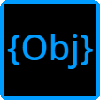

Objector
|
未命名项目
✏️
─
□
✕
文件
🏠 关闭窗口
Ctrl+H
💾 保存项目
Ctrl+S
📥 保存到本地
🌐 导出HTML
🚀 发布到社区
运行
▶ 运行
F5
⏹ 停止
Shift+F5
🛑 强制停止
Ctrl+Shift+Q
工具
🧩 扩展导入
📖 扩展文档
💻 查看代码
🔍 积木转代码预览
📥 导入 Scratch .sb3
📦 项目模板库
📊 变量监视面板
📖 积木指南
协作
📤 推送进度
🌿 推送到分支
👥 查看人员
🔗 分享链接
帮助
📚 如何使用高级模式
📖 积木使用指南
⛏️ Minecraft模组API
▶ 运行
⏹ 停止
🔍 搜索
📖 教程
🎬 舞台
👤 角色
📝 输出
🔊 音频
🤖 AI
⌨️ 命令行
积木: 0
0 结果
◀
▶
✕
−
100%
+
⟳
积木
JS 代码
⛶
⧉
▶ 运行
⏹ 停止
📂 导入 CSV
📂 导入 JSON
💾 保存代码
🗑️ 清除输出
📤 导出 ▾
📊 导出图表
📄 HTML 交互图表
🖼️ PNG 图片
📋 导出数据
📊 CSV (Excel 兼容)
📗 Excel (.xlsx)
💾 JSON 数据
📝 导出全部
📦 ZIP 打包全部
📝 代码编辑器
类似 Python 的数据分析语法
📈 图表
📋 数据表
📝 输出
Minecraft 模组开发
基岩版 (JavaScript)
网易版 (Python)
Java 版 (Fabric)
.mcfunction 命令文件
生成代码
导出模组
📖 帮助
代码预览
Python
▶ 运行
⏹ 停止
💾 保存
🗑️ 清空
输出
发送
复制积木
删除积木
断开连接 ▸
📌 折叠/展开后续代码
⭐ 标记/取消重要代码
+ 添加列表项
- 移除最后一项
💬 添加批注
🗑️ 删除往后的所有积木
🗑️ 删除内部的所有积木
🔴 设置/取消断点
▶ 运行到此处
复制积木
删除积木
断开连接 ▸
📌 折叠/展开后续代码
⭐ 标记/取消重要代码
+ 添加列表项
- 移除最后一项
💬 添加批注
🗑️ 删除往后的所有积木
🗑️ 删除内部的所有积木
🔴 设置/取消断点
▶ 运行到此处
提示
取消
确定
⭐ 跳转到重要代码 (Ctrl+T)
关闭
💻 积木转代码预览
JavaScript
Python
📋 复制代码
提示：这是积木对应的等价代码，帮助你理解编程逻辑
关闭
📊 变量监视
✕
运行项目后显示变量值
📦 项目模板库
取消
📖 入门教程
步骤 1 / 1
跳过
◀ 上一步
下一步 ▶